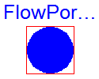
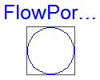

Anton Haumer
Technical Consulting & Electrical Engineering
A-3423 St.Andrae-Woerdern, Austria
email: a.haumer@haumer.at
Dr. Christian Kral
Austrian Institute of Technology, AIT
Giefinggasse 2
A-1210 Vienna, Austria
Copyright © 1998-2010, Modelica Association, Anton Haumer and Austrian Institute of Technology, AIT.
This Modelica package is free software and the use is completely at your own risk; it can be redistributed and/or modified under the terms of the Modelica License 2. For license conditions (including the disclaimer of warranty) see Modelica.UsersGuide.ModelicaLicense2 or visit http://www.modelica.org/licenses/ModelicaLicense2.
Extends from Modelica.Icons.InterfacesPackage (Icon for packages containing interfaces).
| Name | Description |
|---|---|
| Connector flow port | |
| FlowPort_a | Filled flow port (used upstream) |
| FlowPort_b | Hollow flow port (used downstream) |
| Partial models |
| Type | Name | Default | Description |
|---|---|---|---|
| Medium | medium | Medium in the connector |
| Type | Name | Description |
|---|---|---|
| Medium | medium | Medium in the connector |
| Pressure | p | [Pa] |
| flow MassFlowRate | m_flow | [kg/s] |
| SpecificEnthalpy | h | [J/kg] |
| flow EnthalpyFlowRate | H_flow | [W] |
connector FlowPort "Connector flow port" parameter FluidHeatFlow.Media.Medium medium "Medium in the connector"; Modelica.SIunits.Pressure p; flow Modelica.SIunits.MassFlowRate m_flow; Modelica.SIunits.SpecificEnthalpy h; flow Modelica.SIunits.EnthalpyFlowRate H_flow;end FlowPort;

Extends from FlowPort (Connector flow port).
| Type | Name | Default | Description |
|---|---|---|---|
| Medium | medium | Medium in the connector |
| Type | Name | Description |
|---|---|---|
| Medium | medium | Medium in the connector |
| Pressure | p | [Pa] |
| flow MassFlowRate | m_flow | [kg/s] |
| SpecificEnthalpy | h | [J/kg] |
| flow EnthalpyFlowRate | H_flow | [W] |
connector FlowPort_a "Filled flow port (used upstream)" extends FlowPort;end FlowPort_a;

Extends from FlowPort (Connector flow port).
| Type | Name | Default | Description |
|---|---|---|---|
| Medium | medium | Medium in the connector |
| Type | Name | Description |
|---|---|---|
| Medium | medium | Medium in the connector |
| Pressure | p | [Pa] |
| flow MassFlowRate | m_flow | [kg/s] |
| SpecificEnthalpy | h | [J/kg] |
| flow EnthalpyFlowRate | H_flow | [W] |
connector FlowPort_b "Hollow flow port (used downstream)" extends FlowPort;end FlowPort_b;